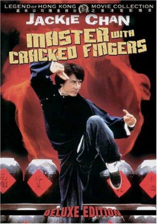
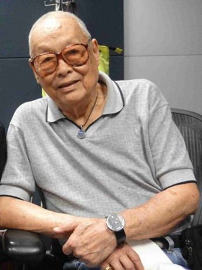
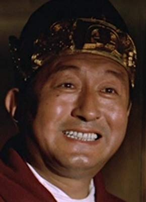
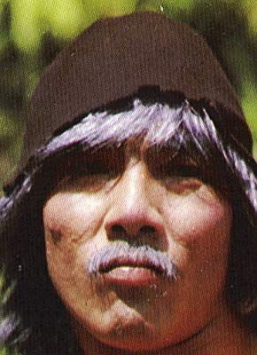
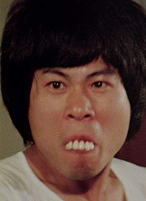
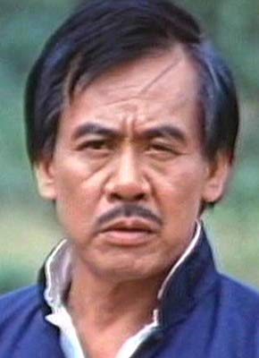

#5291 Der Meister mit den gebrochenen Händen
Alternativ: 'The Master' with cracked fingers (Originaltitel)
 
 IMDB-Wertung: 5.3 / 10
IMDB-Wertung: 5.3 / 10  Metascore: 0
Metascore: 0 
Young Jackie was intrigued by Kung-Fu since an early age, but his father strictly forbade its practice. One day, he meets an old beggar who offers to teach Jackie how to fight. Jackie grows up to be quite good though he keeps his knowledge a secret until he is forced to fight by an extortion ring that's putting the squeeze on his uncle's restaurant.
Jahr: 1973
Dauer: 85 Minuten
FSK: 16
Land: Hong-Kong Studio: Snake Fist NinjaTonspuren:
Untertitel:
Auflösung: 1080p (1920x816) Größe: 6717 MB
Genre: Action, Drama, Komödie
Regisseur: Mu Chu, Hoi-Fung Ngai
Drehbuch: Matt Chow
Soundtrack:
Darsteller:
 Jackie Chan als Hsiao Hu
Jackie Chan als Hsiao Hu- Hung Lieh Chen als Uncle Chiang
- Biao Yuen als Pickpocket
-  Feng Tien als Jackie's Foster Father
 Ted Rusoff als Hsiao Hu , uncredited
Ted Rusoff als Hsiao Hu , uncredited- Siu Tin Yuen als Old Master
 Dean Shek als Landlord
Dean Shek als Landlord- Kwok Choi Hon als Little Frog
- Yeong-Mun Kwon als Big Boss
- Kwok Kuen Chan als
- Kam Cheung als
- Shao-Lin Chiang als
-  Chun Chin als
- Lu Chin als
-  Yuet Sang Chin als
- Feng Erh als
- Kwong Lun Ho als
- Li-Nan Ho als
- Chin Hsu als
- Lo Kam als
- Chung Kwan als Lu Chi / 3rd Brother
- Chien Tang Ma als
 Mars als
Mars als - Pei-Pei Shu als
- Wah-Lung Sze-Ma als
- San Tai als
- Yuan-Pin Tao als
- Fat Wan als
-  Chi Ming Wong als
-  Mei Wong als
- Hsi-Chun Yang als
- Hua Yang als
- Yat Chor Yuen als
- Nick Alexander als Fosterfather , uncredited
- Geoffrey Gerald Copleston als Evil Master , uncredited
- Larry Dolgin als Instructor , uncredited
- Anthony La Penna als Uncle , uncredited
- Steven Luotto als Thief , uncredited
- Edward Mannix als Old Master / Rape Accomplice 1 , uncredited
 Gregory Snegoff als Chaoling's Right Hand / Landlord's Aide , uncredited
Gregory Snegoff als Chaoling's Right Hand / Landlord's Aide , uncredited- Pat Starke als Sister , uncredited
- Frank von Kuegelgen als Chao Ling , uncredited
Datei: X:\HD-Eastern-Collections\Jackie Chan\Meister mit den gebrochenen Händen, Der (1973, FSK16, 1920x816).mkv seit 11.01.2017
Festplatte: HD Eastern+Western
 Es gibt insgesamt 58 Filme in der Gruppe 'HD-Eastern-Collections\Jackie Chan'
Es gibt insgesamt 58 Filme in der Gruppe 'HD-Eastern-Collections\Jackie Chan'